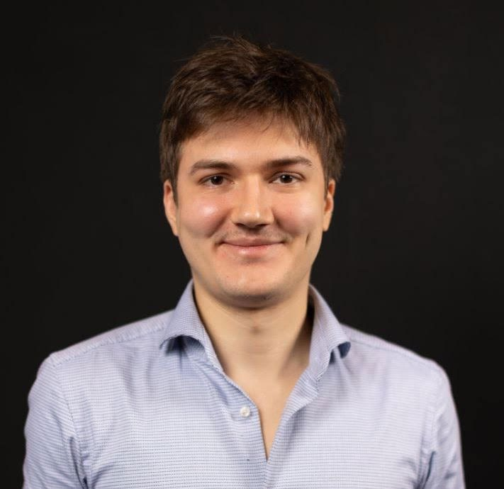

Vita
Dominik Jäkel schreibt tagsüber unter fremden Namen und abends unter seinem eigenen.
Er wurde 1995 in Dortmund geboren. In Freiburg studierte er Liberal Arts & Sciences, danach in Potsdam IT-Systems Engineering am Hasso-Plattner-Institut. Längere Zeit verbrachte er in Colombo und in Cotonou, später auch auf Mallorca.
Vier Jahre lebte er in Kaohsiung auf Taiwan. Er arbeitete dort als Lektor und freier Autor, unter anderem für Sprachassistenten und unabhängige Spielestudios. In Taiwan begann seine Beschäftigung mit der Frühgeschichte des Menschen und die Arbeit an der Ursprungstrilogie.
Seit 2022 lebt er in Berlin und schreibt beruflich für Unternehmen. Auf der Werkstattbühne des Autorenforums Berlin e. V. hat er viele seiner Geschichten gelesen; seit einigen Jahren moderiert er sie.
Im Jahr 2022 erhielt er den A.-E.-Johann-Preis. Gefördert wurde er in der Meisterklasse des Schreibhains und in Seminaren der Bundesakademie für kulturelle Bildung, mit Mentorinnen und Mentoren wie Ursula Poznanski, Wulf Dorn und Klaus N. Frick.
Gerade schließt er seinen Debütroman Satoshi ab; das Manuskript liegt vollständig vor. Der Roman erzählt die Gründungslegende von Bitcoin als Liebesgeschichte dreier Menschen.
Daneben arbeitet er an der Ursprungstrilogie, drei Romanen über die Anfänge der Zivilisation. Sie erzählen von der Geburt der organisierten Religion, der Literatur und der Heiligen Schrift, von Göbekli Tepe um 8000 v. Chr. bis Jerusalem um 940 v. Chr.
Kontakt
Anfragen zu Lesungen und zu den Romanen: Adresse folgt

Werdegang
- 1995 Dortmund, geboren 51° 31′ N, 7° 28′ O
- 2014 Freiburg, Studium Liberal Arts & Sciences 47° 59′ N, 7° 51′ O
- 2015 Potsdam, Studium IT-Systems Engineering am Hasso-Plattner-Institut 52° 23′ N, 13° 04′ O
- 2016 Colombo, Sri Lanka, längerer Aufenthalt 6° 56′ N, 79° 52′ O
- 2018 Cotonou, Benin, längerer Aufenthalt 6° 22′ N, 2° 26′ O
- 2018 Kaohsiung, Taiwan, vier Jahre als Lektor und freier Autor 22° 38′ N, 120° 18′ O
- 2022 Berlin, seitdem Wohnort 52° 31′ N, 13° 24′ O
- 2022 A.-E.-Johann-Preis
- 2023 Mallorca, längerer Aufenthalt 39° 34′ N, 2° 39′ O
Auf der Startseite stehen dieselben Orte auf dem Globus.